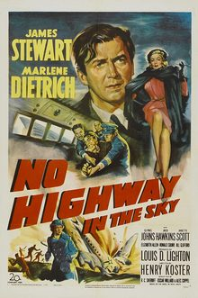

No Highway in the Sky
Starring: James Stewart, Marlene Dietrich, Glynis Johns
Director: Henry Koster
Writer: Oscar Millard, Alec Coppel, R. C. Sherriff
Producer: Louis D. Lighton
No Highway in the Sky (also known as No Highway) is a 1951 black-and-white aviation drama film directed by Henry Koster from a screenplay by R. C. Sherriff, Oscar Millard, and Alec Coppel, based on the 1948 novel No Highway by Nevil Shute. The film stars James Stewart, Marlene Dietrich, Glynis Johns, Jack Hawkins, Janette Scott, Elizabeth Allan, Ronald Squire, and Jill Clifford.
Trivia
- The first writer who worked on the script was R. C. Sherriff.
- The story was then assigned to producer Buddy Lighton, who hired Oscar Millard to do the screenplay.
- Millard said he spent six months writing the script without ever looking at a Sheriff draft.
Filming Locations
- As noted in contemporary sources, filming took place in 1950 at Denham Studios, with location shooting at Blackbushe Airport in Hampshire, England, although the scene with a Gloster E.1/44 prototype was possibly staged at Boscombe Down.
Previous Showings
2 Runs • 1 Festival
Original Billings: 1 run (November 14, 1951)
Original Run: November 14, 1951 (Wednesday - Friday)
All runs on record (2):
- November 14, 1951 (Wednesday - Friday)James Stewart, Marlene Dietrich
- July 10 - 11, 2008Summer 2008 Bette Davis, James Stewart, silent films and more!w/ Strategic Air Command